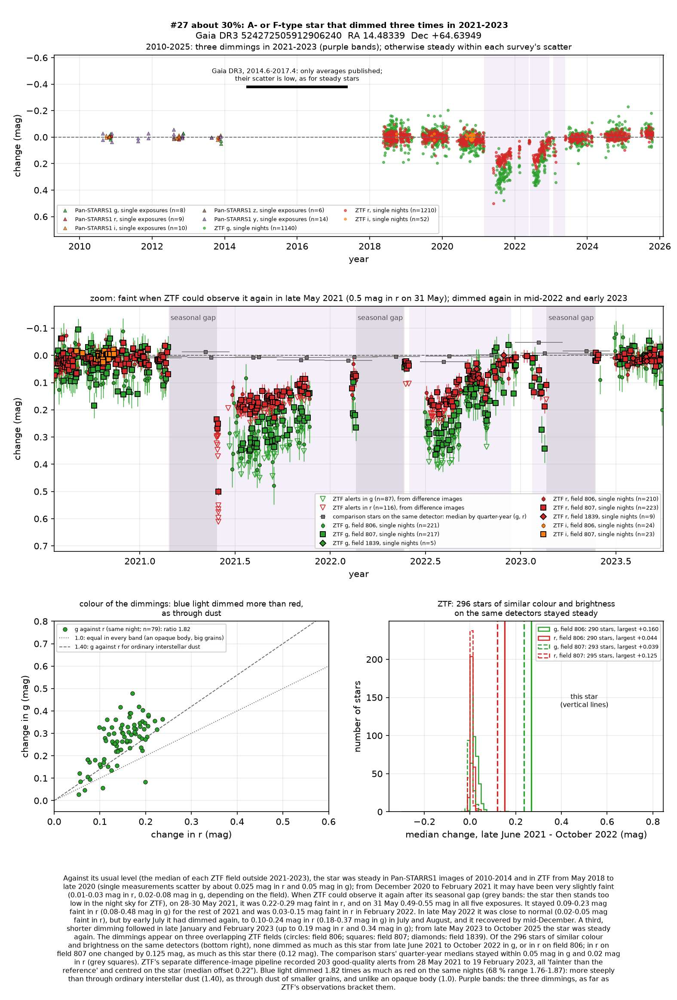
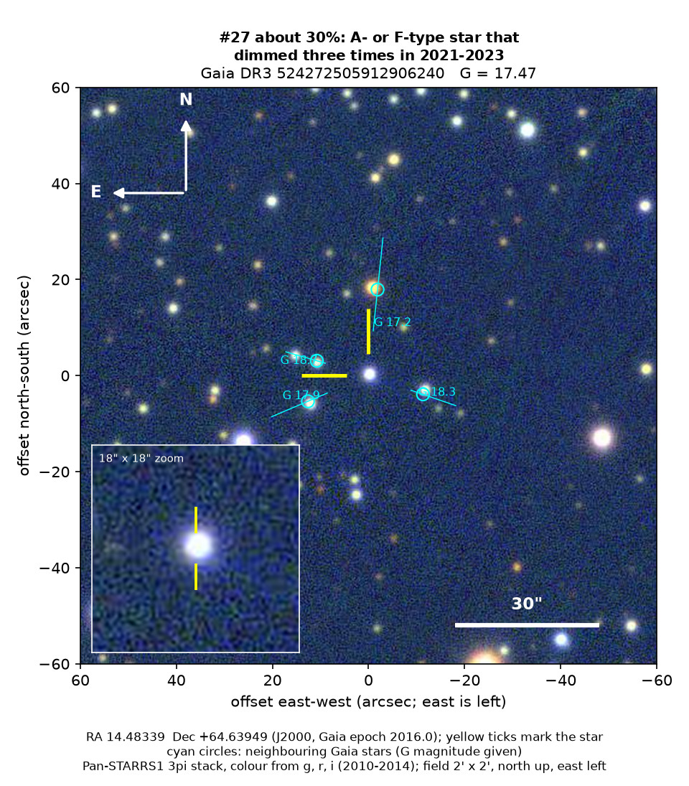
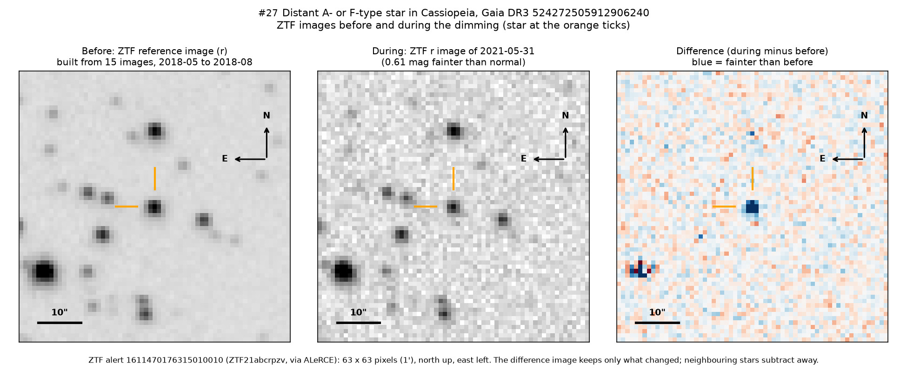

Professor of Mathematics
Paata Ivanisvili
Department of Mathematics, University of California, Irvine

Candidate 27: a distant A- or F-type star that dimmed three times in two years
Why this estimate. The dimmings are certain: ZTF (the Zwicky Transient Facility, a survey telescope at Palomar Observatory in California) recorded them on three different detectors while similar stars stayed steady, and their colour and the nearly unchanged infrared light fit dust. The estimate is not higher because young A-type stars, common in this part of the Milky Way, dim in just this way behind their own dusty discs; this star shows no sign of a disc close to it, but cooler dust farther out cannot be tested. Only ZTF recorded the dimmings, the starts of the two longer ones went unobserved, the star’s type is uncertain, and there is no spectrum.
How to read the pictures. The finder chart shows a patch of sky two arcminutes across, about a fifteenth of the Moon’s width, with north up and east to the left. The star sits between the two yellow ticks, and the white bar is 30 arcseconds long. On a light curve the vertical axis is magnitude, a brightness scale on which larger numbers mean fainter stars, and it is drawn so that down means fainter. Purple shading marks the three dimmings, and grey shading the months when the star could not be observed. Each survey uses slightly different filters, so each is compared with its own normal level. The ZTF pictures show ZTF’s reference image of the star, an image taken during the dimming, and the difference between the two, in which only what changed remains: blue means fainter and red brighter.

What changed. The star, in Cassiopeia, lies about 2,500 to 3,400 parsecs (8,000 to 11,000 light-years) away, almost exactly in the plane of the Milky Way, behind a thick screen of dust. It is hotter and more massive than the Sun: an A-type star of about 8,500 K in Gaia’s models, an F-type star of about 6,000 K in the StarHorse catalogue. It was steady from 2010 to late 2020.
When ZTF could observe it again after its yearly gap, in late May 2021, the star had lost about a fifth of its red light, and on 31 May, within a day, nearly two fifths. It stayed faint for the rest of 2021, slowly recovering, and was almost normal in late May 2022. It dimmed again from June to November 2022, by up to 0.24 magnitudes in red light and 0.37 in green, and a third time in late January and February 2023, by up to 0.19 magnitudes in red and 0.34 in green. Since late May 2023 it has been steady.
Why it might matter. Dust passing in front of the star is the likeliest cause. Green light dimmed 1.82 times as much as red, more than the 1.40 of ordinary interstellar dust, as expected for small grains. An opaque body would dim all colours equally, yet in August 2021 and 2022, while the star was faint, WISE (NASA’s infrared space telescope) found it within 0.03 magnitudes of normal at 3.4 microns. Stars this hot rarely have large spots, an eclipse by another star lasts hours or days, not months, and three detectors leave no room for an instrumental fault. Young A-type stars dimmed by their own dusty discs, the main alternative, glow in the near-infrared and most show hydrogen emission; this one shows neither. The dust might come from a collision between planets or asteroids, or from a disc around an unseen companion, as in epsilon Aurigae. A spectrum would settle the star’s type, age and distance.
No record of the dimmings could be found: the star has no SIMBAD entry and no Gaia DR3 variability entry, VSX (the variable-star index) and the other variable-star, young-star and cluster catalogues checked do not include it, and it is not among the dimming stars of Tzanidakis et al. (2025). There is no Transient Name Server entry, Gaia alert or paper giving its Gaia number, and ZTF’s alert system holds only machine-generated classifications.
- Star
- Gaia DR3 524272505912906240, a distant A- or F-type star
- Location
- RA 14.48339°, Dec +64.63949° (J2000), in Cassiopeia, 1.8 degrees north of the Milky Way’s mid-plane
- Distance
- about 2,500 to 3,400 parsecs (8,000 to 11,000 light-years)
- Brightness
- Gaia G = 17.47, far too faint for the eye or a small telescope
- Probability
- This candidate is unconfirmed. The percentage under the title is an estimate of the chance that it is a real, previously unrecorded case of the kind described. The estimate has not been checked by outside experts. See the introduction to all thirty-two candidates.
- Caveat
- There is no spectrum, so the star’s type and distance are uncertain. Only ZTF recorded the dimmings: the star is too faint for ASAS-SN (a worldwide network of small telescopes), and NASA’s TESS space telescope blends it with its neighbours. The deepest point recorded may not be the deepest reached, and a machine classifier calls the light curve a young star’s.

